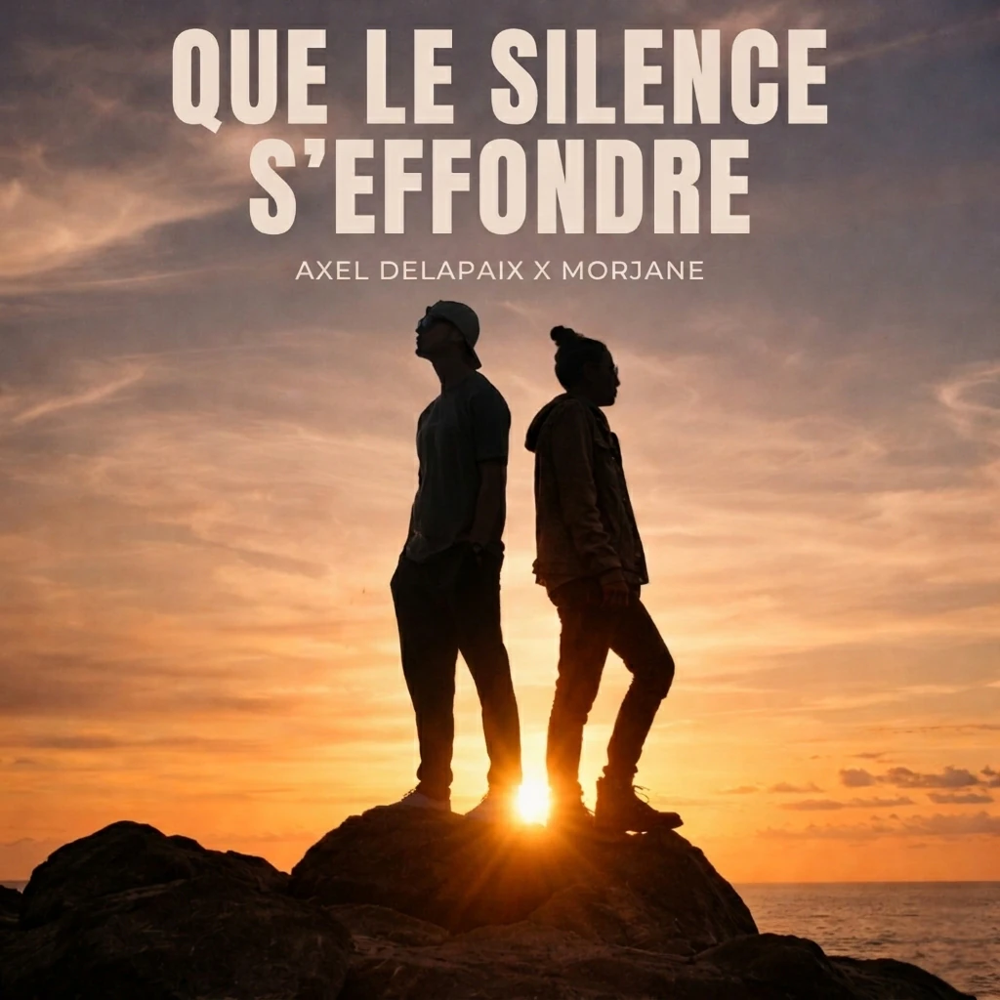

Single
Flamboyante
Eske ou sen parey ?
MORJANE est le nom de scène de Morgane Payet, artiste réunionnaise et autrice-compositrice-interprète. Entre rap et chanson, elle écrit à partir de situations réelles pour raconter les liens, les silences et les traces que chacun porte avec soi.
Je ne fais pas du bruit.
Je laisse une trace.
Je rappe
ce qui déborde.
Je chante
ce qui reste.
J’écris ce qu’on fait malgré ce qu’on sait.

Une voix. Des scènes. Ce qui reste.
Finaliste — single et clip produits
Demi-finaliste — autrice-compositrice-interprète
Performance live
Prix du Coup de Cœur Étudiant
Guest — Les Hurlements d’Léo
Je ne cherche pas la lumière.
Je la laisse me traverser.
Musique
Rien ici ne part de rien.

Collaboration
Axel Delapaix × MORJANE
Découvrir le morceau Écouter sur Spotify Apple MusicEske ou sen parey ?
Écrit par Blue Noon. Interprété par les artistes du Collectif Sèr, dont MORJANE.
Vidéos

01 / Clip officiel
Axel Delapaix × MORJANE
Un duo en tension. Deux corps dos au bruit, quelque chose finit par céder.
Regarder le clipQue le silence s'effondre — Axel Delapaix × MORJANE

Flamboyante — Morjane

Demi-finale Shannkèr

Finale Shannkèr

Restitution Volumes

Collectif Sèr — Sororité
Chanson écrite par Blue Noon, interprétée par le collectif Sèr suite aux ateliers passés ensemble.
Contact
Booking, presse & collaborations
Une question, une programmation ou un projet ? Écrivez-moi directement.
Vos messages servent uniquement à traiter votre demande. En savoir plus sur leur traitement.
Ou directement par mail :
booking@morjane.re
Pour les professionnels, le dossier rassemble bio, photos HD, fiche technique et contact. Télécharger l’EPK